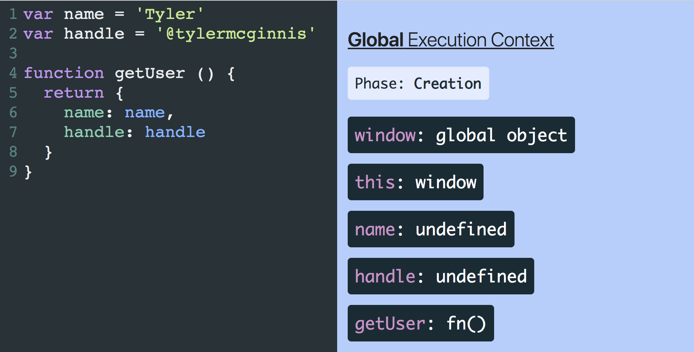

JS Concept: Execution Context, Hoisting, Scope And Closure (P1)
Execution Context (Ngữ cảnh thực thi)
Để có thể hiểu được những concept phức tạp trong JS, thì concept đầu tiên và cơ bản cần hiểu là Execution Context (ngữ cảnh thực thi). Vậy EC là gì?
Execution context là 1 khái niệm trừu tượng. Đó là nơi chứa thông tin về môi trường và đoạn code sẽ được thực thi. Mọi dòng code trong JS khi được chạy đều nằm trong 1 execution context.
Có 3 loại EC trong JS:
- Global EC: EC mặc định, được tạo trước khi mọi dòng code được chạy. Kể cả bạn có 1 file .js không chứa dòng code nào, thì GEC vẫn được khởi tạo ngay khi chạy.
- Function EC: Mỗi khi 1 function được gọi, JS sẽ tạo 1 EC mới cho chính function đó sử dụng.
- Eval EC: EC được tạo khi dùng hàm eval. Tuy nhiên đây là hàm không được khuyến khích dùng trong code. Do vậy chúng ta sẽ bỏ qua loại này.
Mỗi EC sẽ có 2 phase (giai đoạn): creation phase và execution phase (giai đoạn khởi tạo và giai đoạn thực thi).


Với GEC, trong creation phase:
- Khởi tạo global object, object này sẽ chứa các build in function hoặc thuộc tính sẵn có, tùy thuộc vào môi trường (Ở trên browser thì object này là window, trên node là global).
- Tạo Variable Object (VO) scan qua toàn bộ code để khai báo các biến không nằm trong function nào (khai báo bằng var) và các function (chỉ các function declaration). Với biến, thì js sẽ tạo 1 key trong VO trùng với tên biến và gán cho giá trị undefined. Với function, tạo 1 key trong VO trùng với tên function với giá trị là đường dẫn đến function trong bộ nhớ (tức giá trị function được lưu luôn ở giai đoạn này, khác với biến chỉ có tên).
- Xác định giá trị của this (biến context).
Với FEC cũng gần tương tự, trong creation phase:
- Tạo VO để khai báo arguments, biến, function. Agruments là 1 biến dạng object-like-array lưu giữ các tham số đk truyền vào. Ví dụ {par1: val1, par2: val2, length: 2}. Gọi là object-like-array, vì nó lưu dạng key value giông object, và có thêm thuộc tính length. Tuy nhiên nó ko có các method đặc trưng của array.
- Xác định scope chain (khái niệm scope và scope chain sẽ đk nói ở bên dưới).
- Xác định giá trị của this (giá trị này chỉ đk xác định khi function được gọi, tùy thuộc vào ngữ cảnh được gọi, chứ không xác định được từ giai đoạn compile).
Trong giai đoạn execution phase thì JS engine sẽ chạy qua lần lượt các dòng code và thực thi các lệnh.

Ở ví dụ tiếp theo, chta có thể thấy rằng, khi đoạn code trên đk thực thi, gec luôn tồn tại và khi 1 function a đk gọi, thì 1 fec a sẽ được tạo và nằm trên gec. Sau đó trong function a, function b được khai báo và được gọi luôn, thì 1 fec b sẽ được tạo và nằm trên fec a. Sau đó khi function thực hiện xong hết các lệnh, thì fec của nó cũng biến mất, a thực hiện xong hết lệnh thì fec a cũng biến mất. Đây chính là execution stack trong js (hay cũng có thể hiểu là call stack)
let a = 'Hello World!'
function first() {
console.log('Inside first function')
second()
console.log('Again inside first function')
}
function second() {
console.log('Inside second function')
}
first()
console.log('Inside Global Execution Context')
Scope, Scope chain
Scope (phạm vi) trong JS giúp xác định phạm vi truy cập biến hoặc function từ 1 vị trí xác định trong code.
Scope có 2 loại: Global Scope và Local Scope. Tương tự như EC, thì scope ngoài cùng được tạo là Global Scope. Mỗi function sẽ tạo ra 1 scope riêng của nó, gọi là function scope. Có thể hiểu nó chính là VO trong EC.
Ngoài ra từ ES6, với sự bổ sung thêm từ khóa let và const thì có thêm block scope, là scope được tạo giữa 2 dấu {}.
Trong creation phase, thì EC sẽ có 1 scope của riêng nó, ngoài ra, nó cũng xác định được các scope bên ngoài bao bọc nó (parent scope). Các scope con có khả năng truy cập đến scope cha, tuy nhiên không có chiều ngược lại.

It’s important to note that compilation doesn’t actually do anything in terms of reserving memory for scopes and variables. None of the program has been executed yet. Instead, compilation creates a map of all the lexical scopes that lays out what the program will need while it executes. You can think of this plan as inserted code for use at runtime, which defines all the scopes (aka, “lexical environments”) and registers all the identifiers (variables) for each scope.
Closure

Tham khảo:
- https://github.com/getify/You-Dont-Know-JS/blob/2nd-ed/scope-closures/ch1.md#lexical-scope
- https://www.beautifulcode.co/blog/65-lexical-scope-in-javascript
- https://ui.dev/ultimate-guide-to-execution-contexts-hoisting-scopes-and-closures-in-javascript/
- https://ui.dev/var-let-const/
- https://codeburst.io/js-demystified-04-execution-context-97dea52c8ac6
- https://medium.com/@sudhakarsp06/creation-phase-and-execution-phase-in-javascript-32fcdbef60f4
- https://dev.to/innovationincu/javascript-execution-context-4817
- https://ui.dev/javascript-visualizer/
- https://medium.com/@prashantramnyc/javascript-closures-simplified-d0d23fa06ba4
- https://www.freecodecamp.org/news/deep-dive-into-scope-chains-and-closures-21ee18b71dd9/
- https://blog.bitsrc.io/understanding-execution-context-and-execution-stack-in-javascript-1c9ea8642dd0
- https://blog.bitsrc.io/understanding-scope-and-scope-chain-in-javascript-f6637978cf53
- https://blog.bitsrc.io/a-beginners-guide-to-closures-in-javascript-97d372284dda